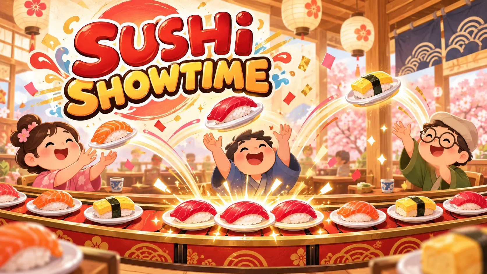

作品概要
タイミングを見て寿司を並べ、連鎖で高得点を目指しながら、お店のコレクションを増やしましょう。
SUSHI SHOWTIMEは、循環する回転寿司のレーンに寿司を投入し、同じネタを3皿以上連続させて提供するパズルゲームです。提供後に新たなマッチが生まれると連鎖になり、得点倍率が上がります。 クエストやガチャで寿司、レーン、客席の照明を集めたり、全16ステージの連鎖チャレンジに挑戦したり。日本語と英語に対応し、ログイン不要で遊べます。
ゲーム / 寿司パズル
回転寿司のレーンに寿司を投入し、同じネタを3皿以上揃えて提供するブラウザゲーム。
タイミングを見て寿司を並べ、連鎖で高得点を目指しながら、お店のコレクションを増やしましょう。

Quick Look
タイミングを見て寿司を並べ、連鎖で高得点を目指しながら、お店のコレクションを増やしましょう。
SUSHI SHOWTIMEは、循環する回転寿司のレーンに寿司を投入し、同じネタを3皿以上連続させて提供するパズルゲームです。提供後に新たなマッチが生まれると連鎖になり、得点倍率が上がります。 クエストやガチャで寿司、レーン、客席の照明を集めたり、全16ステージの連鎖チャレンジに挑戦したり。日本語と英語に対応し、ログイン不要で遊べます。
PLAYから寿司3種類、レーン、客席の照明、季節を選んでスタート。レーンやDROP SUSHIをクリック・タップするか、Spaceキーを押すと、矢印の位置に次の寿司を投入します。
同じネタが3皿以上連続すると提供され、消えた後に別の3マッチができると連鎖します。連鎖処理が終わった時点でレーン上の皿が40枚以上になるとゲームオーバーです。
レーンは循環しており、右端から出た皿は順番を保って左端から戻ります。先頭と末尾も隣り合うため、境界をまたいでマッチさせることもできます。
投入する寿司とその次の寿司を確認しながら狙いましょう。一定時間操作しないと自動投入され、時間とともに猶予は短くなります。通常プレイでは皿が6皿以下のときに20皿投入を使えます。
操作可能なプレイ時間が45秒・90秒になると新しいネタが臨時入荷し、その後の投入候補が増えます。臨時入荷はそのプレイ限りで、所持品には追加されません。
CHALLENGESでは、限られた投入回数で目標の連鎖を作る全16ステージに挑戦できます。前半8ステージは1皿、後半8ステージは最大2皿を使います。
クリアまでの時間に応じて星を獲得し、次のステージが解放されます。失敗時には最初の投入位置のヒントが表示され、各ステージの最高星数と最速タイムも保存されます。
クエストでコインを集め、Lucky Capsuleで未所持の寿司やレーン、客席の照明を獲得できます。新しいアイテムごとに固有のクエストも追加されます。
春・夏・秋・冬の季節ミッションでは、提供した寿司や選んだレーン・照明の季節に応じてポイントが加算されます。客席にはMMCのAI社員11人も登場します。
ゲーム内の言語は日本語・英語に対応。PキーまたはMENUボタンで一時停止でき、BGM・効果音の音量も調整できます。タブを非表示にすると自動でポーズします。
ベストスコア、所持品、クエストやチャレンジの記録などはブラウザに保存されます。COLLECTIONのSAVE DATAからファイルに書き出し、別のブラウザへ読み込むこともできます。
ブラウザでプレイできます。日本語・英語に対応し、ログインは不要です。